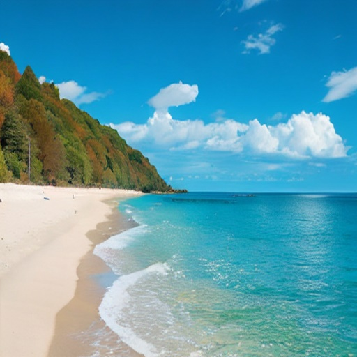
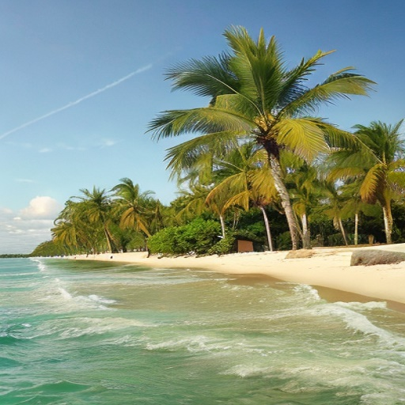
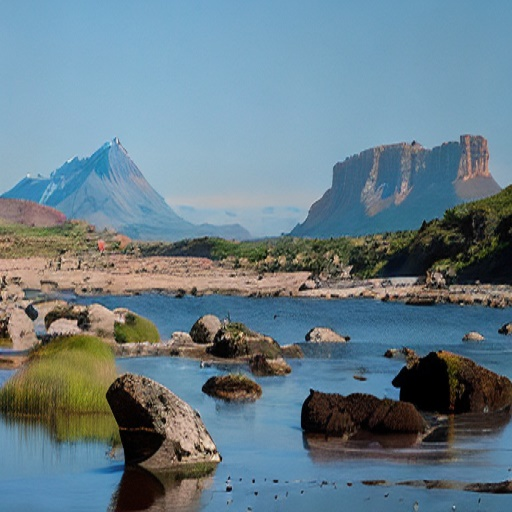

V
enturi
Inicio
Blog
Acerca de
Salto Ángel
Parque Nacional Morrocoy
Isla de Margarita
Parque Nacional Mochima
Parque Nacional Canaima
¡Encuentra tu destino de interes!
"Hay lugares para quedarse y lugares que quedan en uno"
TODOS
Sitios
Parques
Naturales
Recreativos
Historicos
Salto Ángel
El Salto Ángel es la cascada más alta del mundo, Está ubicado en el parque nacional Canaima, Estado Bolívar, Venezuela.
NATURAL
PARQUE
Leer más

Isla de Margarita
Isla de Margarita es parte de Venezuela y se ubica en el mar Caribe. Es un destino vacacional popular.
SITIO
RECREATIVO
Leer más

Parque Nacional Morrocoy
Es una isla protegida y una reserva marina. En sus claras aguas pueden observarse arrecifes de coral.
NATURAL
PARQUE
Leer más
Parque Nacional Mochima
Es una reserva natural es famoso por su abundante fauna, que incluye tortugas de mar y delfines.
NATURAL
PARQUE
Leer más

Parque Nacional Canaima
Es un parque nacional ubicado en el estado Bolívar. Declarado Patrimonio de la Humanidad.
NATURAL
PARQUE
Leer más